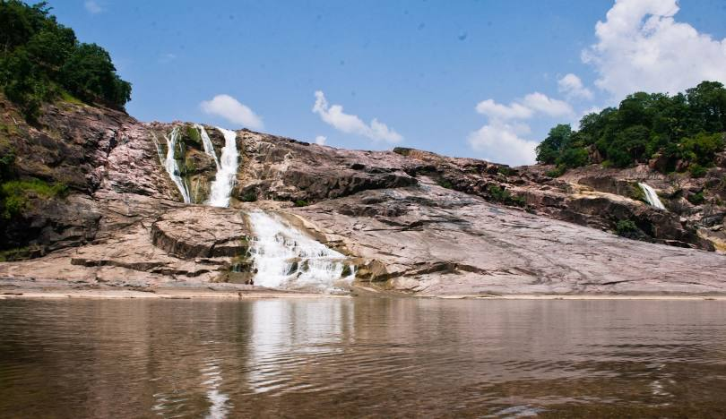

Kuntala Waterfalls
Kuntala Waterfalls is the highest waterfall in the state of Telangana, located in the Adilabad district.
Location: Adilabad, Telangana, India
Ticket Price: Free entry
Transportation: Accessible by road, about 45 km from Adilabad town.